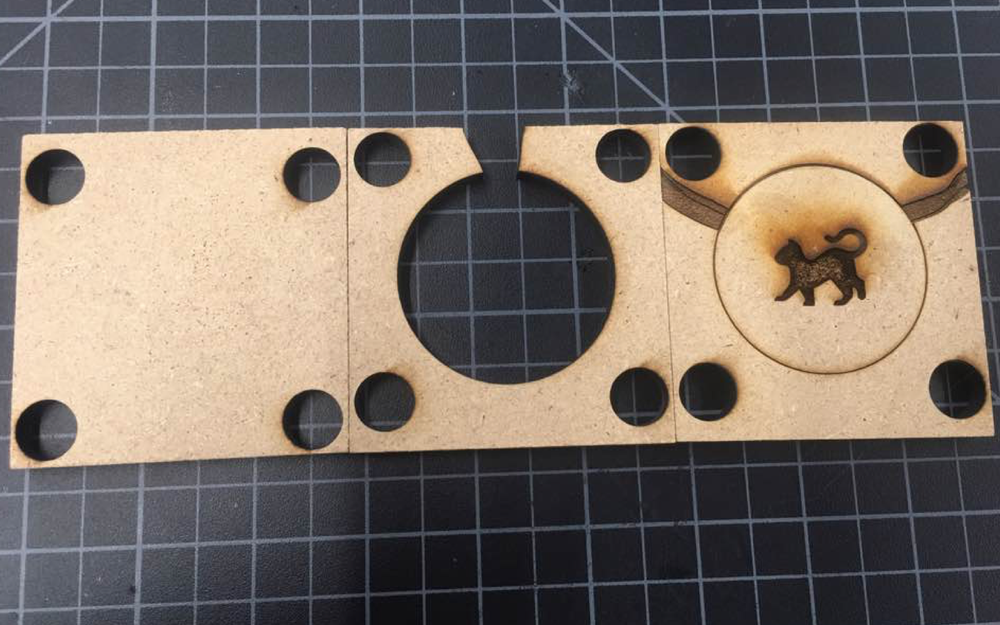

The task for this week is to create pewter mold.
We had to create a mill to pour pewter using either the laser cutter or the CNC milling machine. The mold should contain the negative (of the picture), opening, air holes, and four holes on each vertices. We used Coreldraw to design our mold.
This is how my pewter mold turned out to be! I am excited to see how this cat figure will turn out to be.

We have yet to actually pour pewter, so I am not sure how the result is going to be like. However, I had fun creating the pewter mold and getting to use my prior experience in the laser cutter.